2018年北京市中考化学真题 原卷解析

2018年北京市高级中等学校招生考试
化学试卷
第一部分 选择题（12分）
1. 下列物质能使紫色石蕊溶液变红的是
A. CO2B. O2C. NaClD. NaOH
【答案】A
【解析】
【分析】酸性溶液可以使紫色的石蕊溶液变为红色；
【详解】A、CO2溶于水，且与水反应生成碳酸，能使紫色石蕊试液变红，故A正确；
B、氧气难溶液水，也不能与水反应生成酸，故错误；
C、氯化钠溶于水显中性，故不能使石蕊溶液变红，故错误；
D、氢氧化钠溶液显碱性，使紫色的石蕊溶液变为蓝色，故错误。故选A。
2. 下列含金属元素的物质是
A. H2SO4B. Al2O3C. NO2D. P2O5
【答案】B
【解析】
【详解】A、硫酸是由氢元素、硫元素和氧元素组成，他们都是非金属元素，故错误；
B、Al2O3是由铝元素和氧元素组成，故含有金属元素，故正确；
C、二氧化氮是由氮元素和氧元素组成，氮元素和氧元素都是非金属元素，故错误；
D、P2O5是由磷元素和氧元素组成，磷元素和氧元素都是非金属元素，故错误。故选B。
3. 一些物质的pH范围如下，其中呈碱性的是
A. 油污净（12～13）B. 西瓜汁（5～6）C. 洁厕灵（1～2）D. 橘子汁（3～4）
【答案】A
【解析】
【分析】溶液的pH大于7，溶液显碱性；pH=7，显中性；pH小于7 ，显酸性；
【详解】A、油污净的pH=12～13，大于7，故溶液呈碱性，故正确；
B、西瓜汁的pH=（5～6），故显酸性，故错误；
C、洁厕灵pH=（1～2），小于7，故显酸性，故错误；
D、橘子汁pH=（3～4），小于7 ，故选酸性，故错误。故选A。
4. 下列金属不能与CuSO4溶液反应的是
A. AgB. FeC. ZnD. Al
【答案】A
【解析】
【详解】在金属活动性顺序中，Fe、Zn 和Al都比Cu活泼，都可以与CuSO4溶液发生置换反应；Cu比Ag活泼，Ag不能与CuSO4溶液发生置换反应。故选A。
5. 下列操作不正确的是
A.
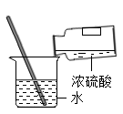
稀释B. 取药C. 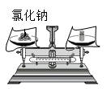
称量D. 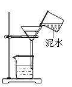
过滤【答案】D
【解析】
【详解】A、稀释浓硫酸时，将浓硫酸沿烧杯内壁慢慢 注入水中，并用玻璃棒不断的搅拌，故A正确；
注入水中，并用玻璃棒不断的搅拌，故A正确；
B、取用固体药品时，试管要先平放，将药品慢慢的送人试管中底部，在将试管直立，故正确；
C、称量固体药品时，要做到左物右码，故正确；
D、该过滤装置中缺少玻璃棒的引流，故错误。故选D。
6. 下列符号中，表示2个氯原子的是
A. Cl2B. 2Cl2C. 2ClD. 2Cl-
【答案】C
【解析】
【详解】试题分析∶表示2个氯原子的是C．2Cl.
考点∶考查化学符号的意义。
7. 下列物质能与NaOH反应的是
A. FeB. CO2C. Fe2O3D. NaCl
【答案】B
【解析】
【详解】A、铁不能与氢氧化钠反应，故错误；
B、二氧化碳可以与氢氧化钠反应生成碳酸钠和水，故正确；
C、氧化铁不能与氢氧化钠反应，故错误；
D、氯化钠不能与氢氧化钠反应，故错误。故选B。
8. 电解水实验如下图。下列说法正确的是

A. 试管b中得到H2B. 产生H2与O2的体积比约为1:2
C. 该实验说明水是由H2和O2组成D. 可用带火星的木条检验生成的O2
【答案】D
【解析】
【详解】A、电解水实验中，与正极相连的试管中收集的是氧气，故A错误；
B、电解水时，产生H2与O2的体积比约为2:1，故错误；
C、水通电后生成氢气和氧气，氢气和氧气是由氢元素和氧元素组成，故该实验说明水是由H、O元素组成，水是纯净物，水中不含有氢气和氧气，故错误；
D、氧气具有助燃性，可使带火星的木条复燃，故正确。故选D。
9. 用下图装置进行实验。下列现象能证明空气中O2的含量的是

A. 红磷燃烧，产生白烟B. 瓶中液面先下降，后上升
C. 瓶中液面最终上升至1处D. 水槽中液面下降
【答案】C
【解析】
【详解】A、红磷燃烧，产生白烟，说明氧气支持燃烧，不能说明氧气的含量，故错误；
B、瓶中液面先下降，后上升，说明反应放热，不能具体的说明氧气的含量，故错误；
C、瓶中液面最终上升至1处，说明空气中氧气占总体积的1/5，正确；
D、水槽中液面下降只能说明空气中氧气的体积减少，不能具体的说明氧气的含量，故错误。故选C。
依据下列20℃时的实验和数据回答下列小题。
已知20℃时，NaCl和NaNO3的溶解度分别为36g和88g。

| 序号 | ① | ② | ③ | ④ | ⑤ |
固体种类 | NaCl | NaCl | NaNO3 | NaNO3 | NaNO3 |
固体的质量/g | 30 | 60 | 30 | 60 | 90 |
水质量/g | 100 | 100 | 100 | 100 | 100 |
10. ①～⑤所得溶液属于饱和溶液的是（ ）
A. ①③B. ②④C. ②⑤D. ④⑤
11. 下列关于①～⑤所得溶液的说法不正确的是（ ）
A. 溶质质量：①<②B. 溶液质量：②<④
C. 溶质质量分数：①=③D. ⑤中溶质与溶剂的质量比为9:10
【答案】10. C 11. D
【解析】
【10题详解】
根据20℃时，NaCl和NaNO3的溶解度分别为36g和88g可知，②、⑤中含有未溶解的NaCl和NaNO3，即所得溶液为饱和溶液。故选 C
【11题详解】
A、根据20℃时，NaCl和NaNO3的溶解度分别为36g和88g判断溶质质量：①中30g<36g，故①所得的溶液是不饱和溶液，故溶液中的溶质的质量为30g，②中加入60g的氯化钠，最多只能溶解36g的氯化钠，故溶液中的溶质的质量为36g，故溶质的质量①<②，正确；
B、②中最多溶解氯化钠的质量为36.0g，故所得溶液的质量为136g，④中60g的硝酸钠完全溶解，故所得溶液的质量为160g，故所得溶液质量②<④，正确；
C、①和③中30g的氯化钠和硝酸钠都完全溶解，故所得溶液的质量①=③，正确；
D、⑤中最多能溶解硝酸钠88g，故溶质与溶剂的质量比为88:100=22:25，故错误。故选D。
12. 氨催化氧化是制硝酸的主要反应之一。该反应前后分子种类变化的微观示意图如下。下列说法不正确的是

A. 甲中氮、氢原子个数比为1:3B. 乙相对分子质量为32
C. 两种生成物均为化合物D. 生成的丙与丁的分子个数比为1:2
【答案】D
【解析】
【分析】根据微观示意图判断化学方程式为4NH3+5O2  4NO+ 6H2O。
4NO+ 6H2O。
【详解】A、甲物质是NH3，其中氮、氢原子个数比为1:3，故A正确；
B、乙物质是O2，O2的相对分子质量为16×2=32，故B正确；
C、由图可知，两种生成物是NO和H2O，都是由两种元素组成，故均为化合物，故正确；
D、由方程式可知，生成的丙与丁的分子个数比为4:6=2:3，故错误。
故选D。
第二部分 非选择题（33分）
（生活现象）
13. 补齐连线。从13-A或13-B中任选一个作答，若均作答，按13-A计分。
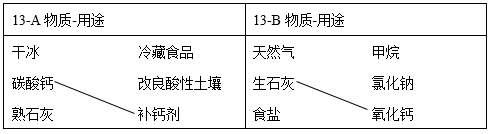
【答案】
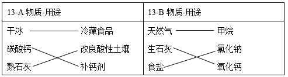
【解析】
【详解】A:干冰升华降温，可以冷藏食品；熟石灰呈碱性，可以中和酸性土壤；B：天然气的主要成分是甲烷；食盐的主要成分是氯化钠。
14. 干热岩是地层深处的热岩体。下图为利用其发电的示意图。
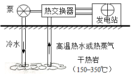
（1）将干热岩的热量传递到热交换器的物质是______。
（2）从微粒的角度分析，水变为水蒸气时，变化的是_________。
【答案】 ①. 水/水蒸气； ②. 分子间间隔。
【解析】
【详解】（1）据图判断将干热岩的热量传递到热交换器的物质是水/水蒸气；
（2）从微粒的角度分子，水变为水蒸气时，变化的是水分子的分子间间隔增大，而分子的种类没有发生变化；
15. H2O2可作增氧剂。常温下，用4%H2O2溶液进行实验，研究pH对H2O2分解所得溶液中氧量的影响，测定结果如图。
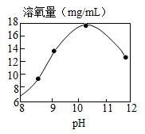
（1）H2O2分解的化学方程式为____________________。
（2）分析如图得到的结论是_______________。
【答案】 ①. 2H2O2=2H2O+O2↑； ②. 在常温下，当pH值在8-12之间时，随pH值增大，溶氧量先增大后减小，且在pH值在10-11中间时，溶氧量达到最大值。
【解析】
【详解】（1）H2O2分解生成氧气和水，反应化学方程式为2H2O2=2H2O+O2↑；
(2)根据图中信息判断在常温下，当pH值在8-12之间时，随pH值增大，溶氧量先增大后减小，且在pH值在10-11中间时，溶氧量达到最大值。
（科普阅读理解）
16. 阅读下面科普短文。
化石能源是目前应用最广泛的能源，但其储量有限，不可再生。《2050年世界与中国能源展望》中提出，全球能源结构正在向多元、清洁、低碳转型。

由上图可见，太阳能、风能等其他可再生能源在能源结构中所占比例日益增多。太阳能的利用是热门研究方向之一。例如，通过光催化可将H2O、CO2转化为H2、CO、CH4、CH3OH（甲醇）等太阳能燃料，示意图右图。

随着科技的进步，能源将得到更充分的利用。例如，利用照明灯、人体散发的热量灯生活中随处可见的废热发电。我国研发的“柔性、可裁剪碲化铋（Bi2Te3）/纤维素复合热点薄膜电池”，能充分贴合人体体表，实现利用体表散热为蓝牙耳机、手表、智能手环等可穿戴电子设备供电。

在新能源的开发和利用中，化学起着不可替代的作用。
依据文章内容回答下列问题。
（1）比较2015、2030和2050年能源结构中的化石能源，所占比例降低的是_____________。
（2）H2O、CO2转化得到的太阳能燃料中，属于氧化物的是_____________；该过程属于_______________（填“物理”或“化学”）变化。
（3）复合热点薄膜电池中Bi2Te3由_______种元素组成。
（4）下列说法正确的是 ____________（填序号）。
A.能源结构向多元、清洁、低碳转型 B.科技进步会促进能源的利用
C.石油和太阳能属于可再生能源 D.生活中的废热可转化为电能
【答案】 ①. 常规能源煤炭、石油等比例降低； ②. CO ③. 化学； ④. 两（或2）； ⑤. ABD。
【解析】
【详解】（1）据图判断太阳能、风能等其他可再生能源在能源结构中所占比例日益增多，常规能源煤炭、石油等比例降低；
（2）氧化物是指由两种元素组成，其中一种元素是氧元素的化合物，根据光催化可将H2O、CO2转化为H2、CO、CH4、CH3OH（甲醇），其中CO属于氧化物；该过程中有新物质生成，故是化学变化；
（3）Bi2Te3由Bi、Te两种元素组成；
（4）A、根据材料和图可知能源结构向多元、清洁、低碳转型，故A正确；
B、由图可知，随着科技进步，会促进能源的利用，故正确；
C、石油是化石燃料，属于不可再生资源，太阳能属于可再生能源，故错误；
D、根据题意可知生活中的废热可转化为电能，正确。故选ABD。
（生产实际分析）
17. 炼铁的主要原料是赤铁矿（主要成分是Fe2O3）、焦炭、空气等，转化过程如下：
（1）②中，反应为CO2+C 高温2CO，其中化合价发生改变的元素是______。
（2）③中，CO与Fe2O3反应的化学方程式为_____________________。
【答案】 ①. C或碳元素； ②. Fe2O3+3CO 2Fe+3CO2。
【解析】
【详解】（1）CO2中C的化合价为+4，氧元素的化合价为-2，C单质的化合价为0，CO中C的化合价为+2，氧元素的化合价为-2，即该反应中碳元素化合价发生改变；
（2）一氧化碳与氧化铁在高温的条件小反应生成铁和二氧化碳，反应方程式为：Fe2O3+3CO 2Fe+3CO2
18. 为保护绿水青山，可将工业残留的钡渣（主要成分为碳酸钡（BaCO3））进行无害化处理，制取化工原料；硫酸钡（BaSO4）。主要流程如下：
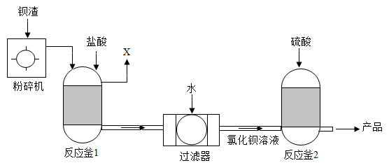
已知：BaSO4难溶于水，氯化钡（BaCl2）可溶于水。
（1）粉碎钡渣的目的是___________________________。
（2）反应釜1中的气体X为____________。
（3）反应釜2中发生复分解反应的化学方程式为_______________________。
【答案】 ①. 增大反应物的接触面积，加快反应速率，使其充分反应； ②. CO2； ③. BaCl2+H2SO4=BaSO4↓+2HCl。
【解析】
【详解】（1）实验中将钡渣粉碎是为了增大反应物的接触面积，加快反应速率，使其充分反应；
（2）反应釜1中发生的反应是BaCO3+2HCl=BaCl2+CO2↑+H2O，所以，气体X为CO2；
（3）反应釜2中是氯化钡溶液与硫酸反应生成硫酸钡沉淀和稀盐酸，反应方程式为：BaCl2+H2SO4=BaSO4↓+2HCl。
（基本实验及其原理分析）
19. 用下图装置进行实验(夹持仪器略去)。加热一段时间后，蜡烛熔化、掉落，之后火柴燃烧。
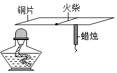
(1)能说明铜具有导热性的现象是 ______ 。
(2)能体现物质化学性质的现象是 ___________ (填序号)。
A 酒精燃烧 B 蜡烛熔化 C 火柴燃烧
【答案】 ①. 蜡烛熔化，掉落(或火柴燃烧) ②. AC
【解析】
【详解】(1)加热一段时间后，蜡烛熔化、掉落，之后火柴燃烧说明铜具有导热性；
(2)酒精、火柴燃烧生成新的物质，发生化学变化，体现物质的化学性质；蜡烛熔化，是物质状态的变化，发生物理变化，体现物质的物理性质，故选AC。
20. 用下图装置进行实验(夹持仪器略去)。
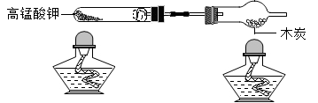
(1)高锰酸钾分解的化学方程式为________。
(2)木炭遇O2燃烧时，现象为_______。
【答案】 ①. 2KMnO4K2MnO4+MnO2+O2↑ ②. 剧烈燃烧，发出白光，放热
【解析】
【详解】(1)高锰酸钾在加热的条件下反应生成锰酸钾和二氧化锰和氧气，反应方程式为2KMnO4K2MnO4+MnO2+O2↑；
(2)木炭在氧气中燃烧发出白光，放出热量；
21. 实验室用如图装置制取CO2。
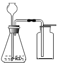
(1)反应的化学方程式为______。
(2)用向上排空气法收集CO2的原因是_____，______。
【答案】 ①. CaCO3+2HCl=CaCl2+CO2↑+H2O ②. CO2的密度大于空气 ③. 且不与空气中的其他其他反应
【解析】
【详解】(1)实验室用碳酸钙和稀盐酸反应生成氯化钙、二氧化碳和水来制取二氧化碳，反应方程式为CaCO3+2HCl=CaCl2+CO2↑+H2O；
(2)二氧化碳的密度比空气的密度大，且不与空气中的其他其他反应，故选向上排空气法收集。
22. 用下图所示实验验证可燃物燃烧的条件。
已知：白磷的着火点为40℃。
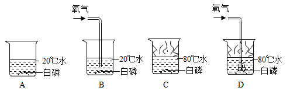
（1）设计B、D的目的是________________________。
（2）能验证可燃物需要O2现象是_______________________。
（3）A～D中，可不做的实验是___________（填序号）。
【答案】 ①. 探究可燃物燃烧需要温度达到着火点； ②. C中白磷不燃烧，D中白磷燃烧； ③. A。
【解析】
【详解】（1）白磷是可燃物，B图温度为20℃，通入氧气，温度未达到着火点，白磷不燃烧；D图温度为80℃，通入氧气，温度达到着火点，白磷燃烧，故设计B、D的目的是探究可燃物燃烧需要温度达到着火点；
（2）C中温度达到80℃，达到白磷的着火点，由于没有氧气，白磷不燃烧，而D中，通入氧气，白磷燃烧，说明可燃物燃烧需要氧气；
（3）B、D实验可以验证可燃物燃烧需要达到着火点，C、D实验可以验证可燃物燃烧需要氧气，故不需要做A。
23. 进行如下微型实验，研究物质的性质。
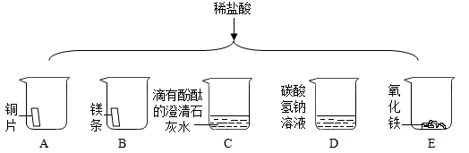
（1）能产生气泡的是_____________（填序号）。
（2）能证明C中发生反应的现象是______________。
（3）有一只烧杯中的物质不与稀盐酸反应，原因是__________________________。
【答案】 ①. BD； ②. 红色溶液变为无色； ③. Cu的活动性排在氢后，所以不与稀盐酸反应。
【解析】
【详解】（1）Mg与稀盐酸反应生成氯化镁和氢气，NaHCO3与稀盐酸反应生成氯化钠、二氧化碳、和水，故BD正确，铜不与稀盐酸反应，澄清石灰水可以与稀盐酸反应，无气体生成，氧化铁可以与稀盐酸反应，但无气泡冒出，故选BD；
（2）滴有酚酞的澄清石灰水的溶液为红色溶，稀盐酸能与氢氧化钙发生中和反应，当溶液由红色变为无色时，说明发生反应；
（3）在金属活动性顺序中，Cu的活动性排在氢后，所以不与稀盐酸反应。
（科学探究）
24. 为探究碳还原氧化铜的最佳实验条件，用木炭粉和氧化铜的干燥混合物1～2.5g进行系列实验。
【查阅资料】①氧化铜（CuO）为黑色固体。
②碳还原氧化铜得到的铜中可能含有少量的氧化亚铜；氧化亚铜为红色固体，能与稀硫酸反应：Cu2O+ H2SO4 = CuSO4 + H2O + Cu
【进行实验】
实验1：取质量比1:11的木炭粉和氧化铜混合物1.3g，进行实验。
序号 | 1-1 | 1-2 |
装置 | 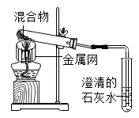 | 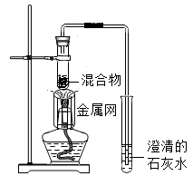 |
反应后物质的颜色、状态 | 黑色粉末中混有少量红色固体 | 红色固体有金属光泽，混有极少量，黑色物质 |
实验2：取一定量的混合物，用1—2装置进行实验。
序号 | 木炭粉与氧化铜质量比 | 反应后物质的颜色、状态 |
2-1 | 1:9 | 红色固体有金属光泽 | 混有少量黑色物质 |
2-2 | 1:10 | 混有很少量黑色物质 |
2-3 | 1:11 | 混有极少量黑色物质 |
2-4 | 1:12 | 无黑色物质 |
2-5 | 1:13 | 混有较多黑色物质 |
【解释与结论】
（1）配平化学方程式： ___ C+ ___ CuO高温___ Cu+ ___ CO2↑。
（2）实验1—2中，证明产生CO2的现象是 _______________________ 。
（3）实验1的目的是 __________ 。
（4）实验2的结论是 _____________ 。
【反思与评价】
（5）实验2没有进行质量比为1:14的实验，理由是 ________________ 。
（6）为检验2—4的红色固体中是否含Cu2O，所需试剂是 __________ 。
【答案】 ①. 1 ②. 2 ③. 2 ④. 1； ⑤. 澄清石灰水变浑浊； ⑥. 探究木炭与氧化铜的受热面积对其反应的影响； ⑦. 木炭与氧化铜质量比为1:12是恰好反应，因此木炭与氧化铜反应的最佳质量比为1:12； ⑧. 木炭与氧化铜质量比为1:13时，氧化铜已过量； ⑨. 稀硫酸。
【解析】
【详解】（1）木炭与氧化铜反应方程式：C+2CuO高温 2Cu+CO2↑；
（2）二氧化碳使澄清石灰水变浑浊，故如看到澄清石灰水变浑浊，说明有二氧化碳生成；
（3）实验1-1，反应物受热面积较大，实验1-2反应物受热面积较小，故实验1与实验2形成对比实验，可以探究木炭与氧化铜的受热面积对其反应的影响；
（4）由表可知，当木炭与氧化铜质量比为1:12是恰好反应，即木炭与氧化铜反应的最佳质量比为1:12；
（5）由表可知，当木炭与氧化铜质量比为1:13时，氧化铜已过量，生成物中含有Cu和CuO，没有必要进行质量比为1:14的实验；
（6）因为Cu2O + H2SO4 = CuSO4 + H2O + Cu，所以向红色固体中加稀硫酸如溶液变为蓝色，可以可以说明有Cu2O。